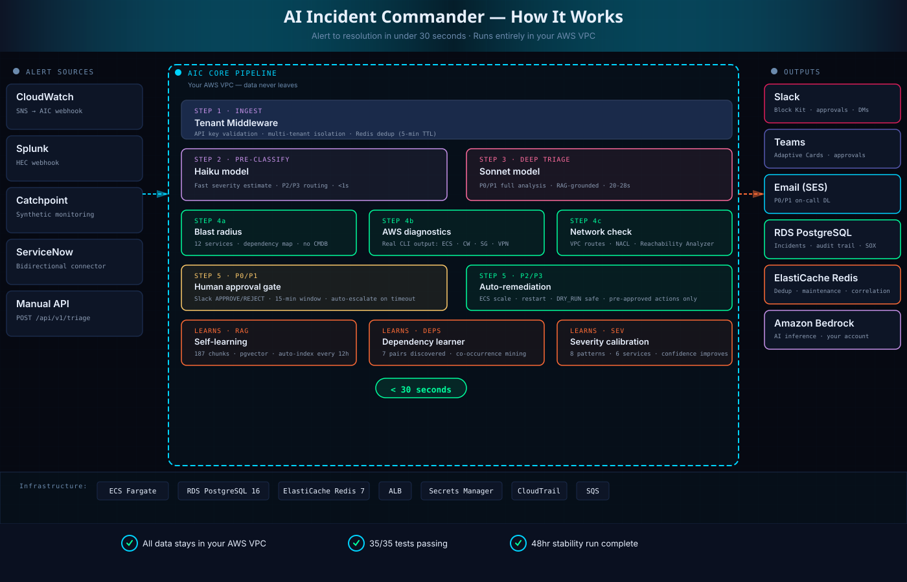

From alert to resolution in under 30 seconds. AI-powered root cause analysis, automated diagnostics, and intelligent remediation. Prevent revenue loss through faster incident response.
For two decades, incident response has meant the same three steps: alert → human reads → human investigates. That model worked when you had 50 alerts a week. It doesn't work at 500.
Observability tools gave us more signal. On-call platforms gave us better paging. Neither solved the real bottleneck: a human still has to read, understand, and investigate every single alert before they can act.
Agentic AI changes that math. AIC reads the alert, maps the blast radius, runs the diagnostics, checks the runbooks, and delivers a complete briefing — before the engineer has finished reading the Slack or Teams notification.
OpsGenie sunsets April 2027. Enterprises are already evaluating replacements. The smart ones aren't looking for another notification tool — they're looking for autonomous triage. The window to modernize your incident response is now.
AIC automatically detects your technology stack and generates platform-specific diagnostics — not just AWS.
ECS, Lambda, RDS, ALB, VPC, CloudWatch, Security Groups, Route53
PostgreSQL, MySQL, Redis, DynamoDB, MongoDB, ElastiCache
Kafka, RabbitMQ, SQS, SNS, Kinesis, EventBridge
ECS Fargate, Kubernetes, Docker, EKS, ECR
Auto-detection: AIC reads your alert description, identifies the technology stack, and generates tech-specific diagnostic commands. Kafka lag checks, PostgreSQL connection pools, Redis memory stats — no configuration needed.
Every triage produces a structured card with AI summary, blast radius analysis, auto-executed AWS diagnostics, and one-click remediation actions — delivered to Slack, Microsoft Teams, or both in under 30 seconds.
From alert ingestion to executed AWS diagnostics — fully autonomous. Here's what happens when an incident fires in your production environment:

What makes AIC different:
Every step runs autonomously in your AWS VPC. No human in the loop until Slack delivers the complete briefing. Your on-call engineer gets root cause analysis, blast radius mapping, and real AWS diagnostic output — not just an alert. P0/P1 incidents require approval. P2/P3 incidents auto-remediate with DRY_RUN safety checks.
Silent demo showing 3-window workflow: Terminal fires alerts → Live Monitor shows 12-stage AI pipeline → Slack receives triage cards with tech-specific diagnostics
aws ecs commands, Kafka alerts get kafka-consumer-groups.sh commands. AIC detects the stack automatically. No configuration needed.
Traditional tools forward alerts or manage workflows. AIC solves the actual incident — autonomously.
| Capability | AIC | On-Call Platforms | Observability Tools | ITSM Platforms |
|---|---|---|---|---|
| Autonomous incident triage | ✓ Full | Alert routing only | Detection only | Ticket creation |
| Real AWS diagnostic execution | ✓ Native | ✗ | Metrics only | ✗ |
| Self-learning blast radius mapping | ✓ Auto-discovered | ✗ | Service map (static) | ✗ |
| Self-learning from incident history | ✓ Built-in RAG | Limited | Limited | Manual KB |
| AWS Marketplace deployment | ✓ Native | ✗ | ✗ | ✗ |
| VPC private deployment | ✓ Available | ✗ | Partial | ✗ |
| Flat monthly pricing | ✓ No per-seat | Per seat / per user | Per host / per GB | Per agent |
| Built for regulated industries | ✓ Core focus | General purpose | General purpose | Partial |
Try AIC for 30 days with full platform access. See autonomous triage in action before committing.
Everything your infrastructure, security, and procurement teams need to approve AIC — consolidated in one place.
Need more details for your security or procurement team?
Request Buyers Kit